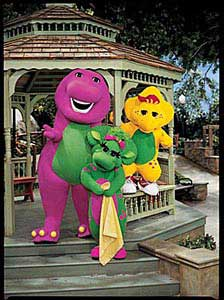
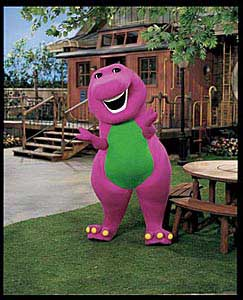

| |
 Celebrating 10 years on PBS, Barney is starring in 20 brand-new episodes beginning September 2 on public television stations nationwide. The new episodes will feature a new setting and new cast of kids - but still offer the same core educational and pro-social elements that have earned the trust of a generation of parents...and taught a generation of children! The new episodes also feature interactive cameos with real kids who playfully respond to Barney by making silly faces, hugging, or pretending to fly in an airplane. As always, music remains an important element, with the new shows featuring fun, new songs, as well as classic Barney favorites.
The new series features both new exterior and interior sets. Outside, there is a safe and familiar park setting with rolling hills, trees, rock formations, and a rustic bridge over a pond, as well as a gazebo and a play/swing set. A special "idea bench" is the ideal place to sit and use one's imagination. The park provides myriad opportunities for exploring nature and outdoor activities. In the background, adults, children and pets can also be seen enjoying themselves. A restored caboose houses a spacious indoor activity center with a library of children's books, an armoire brimming with fun dress-up items, a craft center and a fish tank.  Meet the Cast of Barney & Friends! Barney
& Friends Home | PBS Kids Home
| Music | Games
| Coloring | Storytime |
||